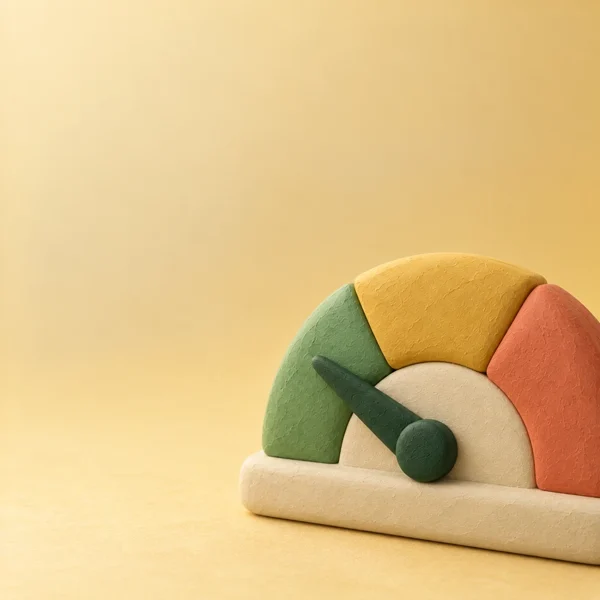

Scanne
Le code-barres suffit : Pépin retrouve le produit et sa composition. Produit introuvable ? Recopie l'étiquette, il est calculé quand même.
Scanne tes produits, je te dis leur indice glycémique et la charge pour ta portion. Sans jugement, avec des idées pour mieux savourer.

Scanne un produit, trouve un aliment en rayon, compose ton assiette, fais tes courses : Glycéo t'accompagne partout.
Le code-barres suffit : Pépin retrouve le produit et sa composition. Produit introuvable ? Recopie l'étiquette, il est calculé quand même.

Index glycémique estimé et charge glycémique pour la portion que tu manges vraiment, avec une couleur simple : doux, modéré ou à surveiller.
Tes repas s'additionnent dans une jauge avec un repère de 80. Tu vois d'un coup d'œil où tu en es, sans rien calculer.
Une liste en tuiles dessinées, rangée par rayon : plus de 500 articles avec leur IG estimé, les fruits et légumes de saison et un ajout en un geste.

Compose ton repas, pâtes, légumes et poulet par exemple : Glycéo estime la charge du repas entier, pas seulement d'un produit.
Celui-ci ou celui-là ? Compare deux produits en rayon et découvre des idées plus douces du même rayon.
Sucres cachés, allergies, sans porc, sans alcool : Pépin inspecte les ingrédients à chaque scan et te prévient.
Une carte vrai ou faux par jour pour comprendre, en une minute, ce qui fait monter la glycémie.
Historique des scans et des repas, suivi du poids avec ton IMC sur une jauge claire. Tout reste sur ton téléphone.
Pas de compte, pas de serveur Glycéo, pas de pub, pas de traceur. Tout se calcule sur ton téléphone. La seule connexion sert à chercher un produit dans Open Food Facts.
Lire la politique de confidentialité →L'index glycémique (IG) indique à quelle vitesse un aliment contenant des glucides fait monter la glycémie, comparé au glucose pur (100). On parle d'IG bas jusqu'à 55, modéré de 56 à 69 et élevé à partir de 70. Glycéo affiche un IG estimé à partir de tables scientifiques publiées.
La charge glycémique (CG) tient compte de la quantité que tu manges vraiment : CG = IG × glucides de la portion (en grammes) ÷ 100. Un aliment à IG élevé peut avoir une petite charge si la portion est modeste. Glycéo la calcule pour ta portion et additionne tes repas dans ta charge du jour.
Oui. Pas d'abonnement, pas de publicité, pas d'achat intégré et pas de compte à créer.
Nulle part : tout ce que tu saisis reste sur ton téléphone. Il n'y a pas de serveur Glycéo. La seule connexion sert à retrouver un produit dans une base alimentaire ouverte, sans aucune donnée personnelle.
Non. Glycéo donne des informations nutritionnelles et des estimations. Ce n'est pas un dispositif médical : l'app ne pose pas de diagnostic, ne calcule pas de dose et ne remplace pas l'avis de ton médecin ou de ton diététicien.
Pour tout adulte qui veut comprendre l'effet de ses repas sur la glycémie : diabète de type 1 ou 2, prédiabète, diabète gestationnel, proche aidant, ou simple curiosité.
Glycéo arrive bientôt sur Android, via Google Play. L'app est disponible en français, en arabe, en anglais et en espagnol.
Glycéo est un outil d'information nutritionnelle. Ce n'est pas un dispositif médical : l'app ne pose pas de diagnostic et ne remplace pas l'avis d'un professionnel de santé.